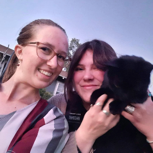
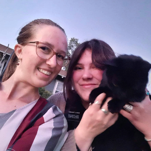

I served in Logan from January to October, Sister Maslich was my companion the whole time. During my time here, I covered 2 stakes for a total of 15 wards and 2 branches!
I had the amazing opportunity to make a music video with my companion Sister Maslich with the help of the Nielsen family. We did an ASL cover of the song "Trust in the Lord."
 
